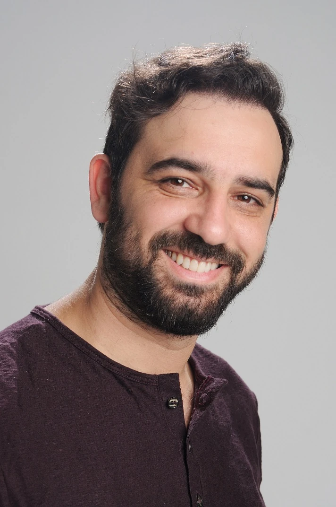

Nacionalidade:JaponêsData de nascimento: 21 de setembro de 1992Local de nascimento: Tóquio,Japão Idade: 33 AnosTrabalhou tambem em:Banana FishJujutsu KaisenGiven
Nacionalidade:JaponêsData de nascimento: 21 de setembro de 1992Local de nascimento: Tóquio,Japão Idade: 33 AnosTrabalhou tambem em:Banana FishJujutsu KaisenGiven
Hanzawa Masato é o presidente do comitê disciplinar da escola e irmão mais novo de uma aluna muito popular. À primeira vista, pode parecer sério e intimidador, mas na realidade é uma pessoa responsável e dedicada. Hanzawa frequentemente se preocupa com o bem-estar dos colegas e tenta manter a ordem na escola, mesmo quando acaba se envolvendo em situações engraçadas por causa de sua imaginação exagerada.
Jap: Yuma UchidaNacionalidade:JaponêsData de nascimento: 21 de setembro de 1992Local de nascimento: Tóquio,Japão Idade: 33 AnosTrabalhou tambem em:Banana FishJujutsu KaisenGiven

Nacionalidade:BrasileiroData de nascimento: 28 de dezembro de 1981Local de nascimento: São Paulo,SPIdade: 44 AnosTrabalhou tambem em:Fruits BasketHaikyú!!My hero Academia